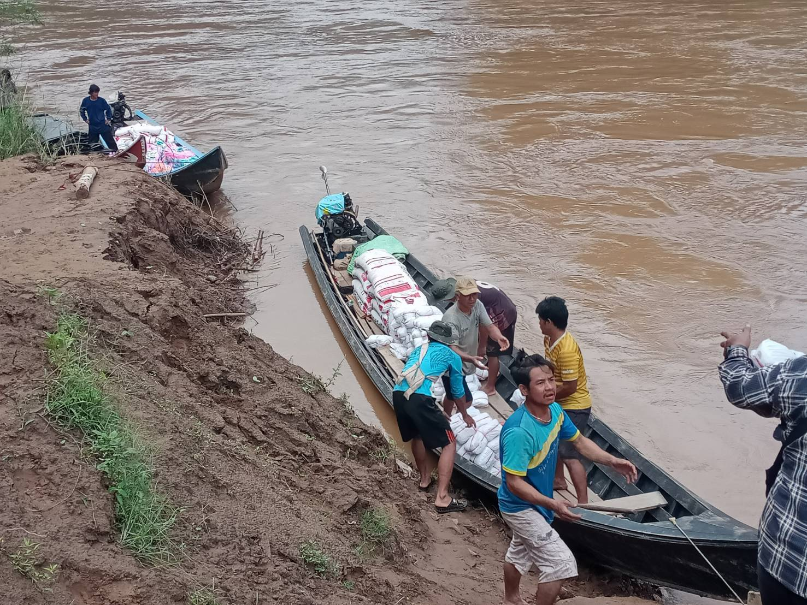
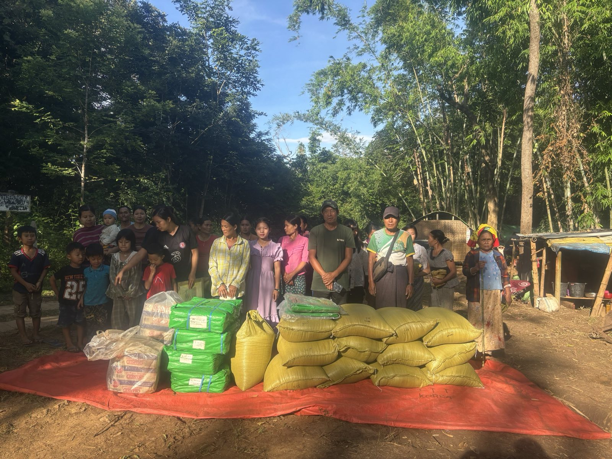

Who We Are
The Coordination Team for Emergency Relief (Karenni), widely known as CTER – Karenni, was officially formed on March 9, 2021. Established by a dedicated network of local volunteers and diaspora members, CTER emerged in direct response to the severe humanitarian crisis triggered by the Myanmar military coup.
Operating under strict neutrality and safety guidelines along the borderlands, our team bridge crucial resource gaps, ensuring that emergency aid is collected, tracked, and safely moved straight to the families who need it most.

Strategic Pillars
Our Vision
To alleviate the physical burdens and psychological stress of the Karenni people suffering in displacement by ensuring they receive immediate, life-saving emergency relief.
Our Mission
To stabilize immediate food security and provide critical life-saving resources to Internally Displaced Persons (IDPs) and disaster-affected communities in Karenni State and neighboring regions.
Our Focus
Global advocacy, human rights accountability, and direct emergency interventions on the ground across vulnerable borderland sectors.
Our Core Activities
Deliver food, shelter, and medicine to IDPs across Karenni State and neighboring regions by working with local partners, civil society organizations, and international donor organizations.
Advocate for the Karenni people on the international stage, and document the truth of what is happening — so the world cannot look away.
Core Principles
We strictly adhere to the humanitarian frameworks of Do No Harm, Inclusion, and Duty of Care to ensure safe, equitable, and respectful delivery of assistance across all intervention zones.
Accountability
All CTER personnel and volunteers are bound by a rigorous organizational Code of Conduct and a strict PSEA (Protection from Sexual Exploitation and Abuse) policy to maintain absolute integrity.

Rooted in Our Community
Effective aid delivery in conflict areas requires unbreakable last-mile logistics. CTER achieves this through close, formalized coordination with trusted local structures and governance entities on the ground.
- KSWDC Karenni Social Welfare & Development Centre
- Local IDP Committees Camp Management & Field Focal Points
- Interim Executive Council Karenni IEC Governance Framework Coordination